I will create a storm topology to read data via tweets "twitter API" for java. This topology will look at the content of tweets to found the key words related to the disciplines of current Olympic Games "Rio 2016". In this example I worked with the HDP (Hortonworks Data Platform) 2.4 Sandbox.
Step 1: Start Storm Service by Ambari
Go to ambari page and start Storm Service in the cluster.
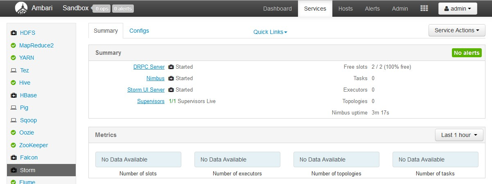Step 2: Twitter application
The Twitter API use OAuth broadcast to authorize requests. To use OAuth, the first step is to create a new application on the Twitter Developer site. To create the ID and the secrets of a Twitter application:
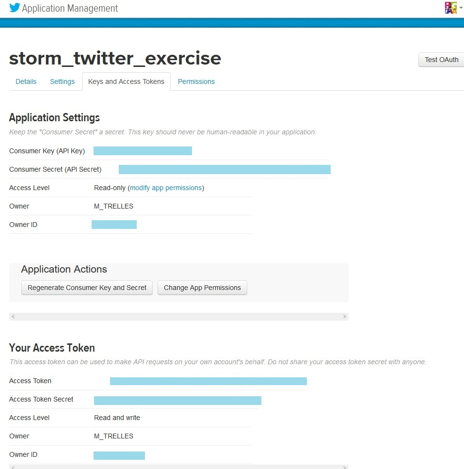
Step 3: Topology Creation
I decided to create a simple topology. This topology is going to read data via tweets "twitter API" for java and in a second time it will found in the content of tweets the key words related to the disciplines of current Olympic Games "Rio 2016". Once treatment has recovered the searched keywords (disciplines in the Olympics) it will count the number of occurrences for each word to generate a ranking of the most popular sports I have used in my topology one Spout and 4 Bolts. Here is a simplified diagram of the topology :
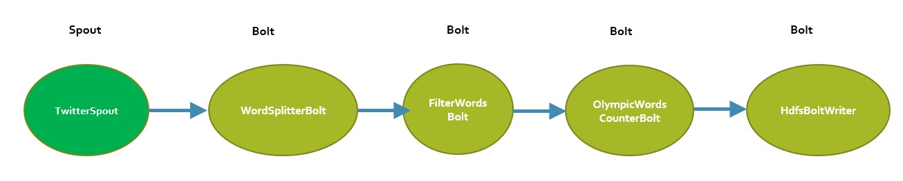
Spout: "Twitter Spout" Reads Twitter's sample feed using the twitter4j library.
Bolt: "WordSplitterBolt» Receives tweets and emits its words over a certain length.
Bolt: "FilterWords Bolt" Bolt filter a predefined set of words about the disciplines of Olympic Games Rio 2016.
Bolt: " OlympicWordsCounterBolt" Keeps stats on word count, calculates and logs top words about the Olympics disciplines every X second to stdout and top list every Y seconds.
Bolt: "HdfsBoltWriter" Write the ranking of disciplines in Hdfs: /path/in/hdfs
Here is an excerpt of the Java code.
Topology.java
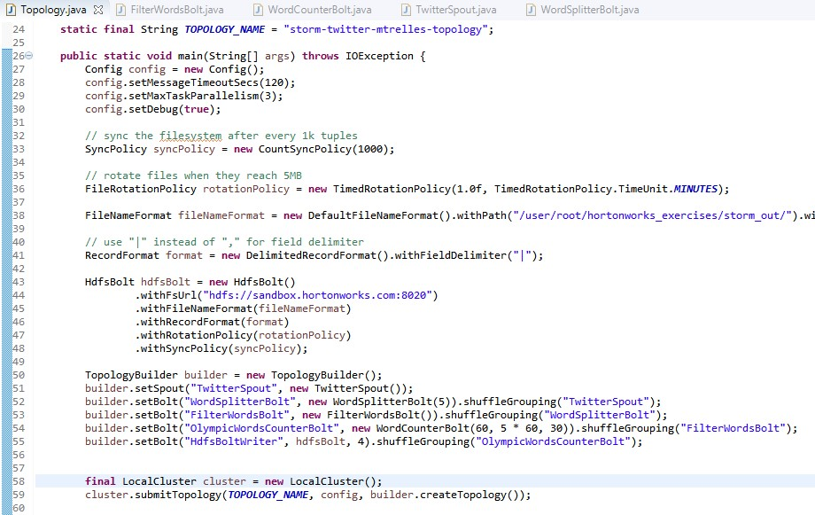TwitterSpout.java
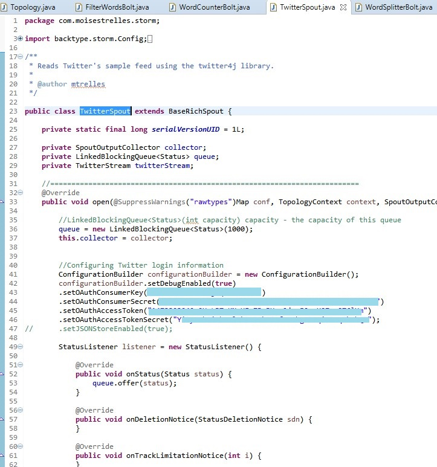FilterWordsBolt.java
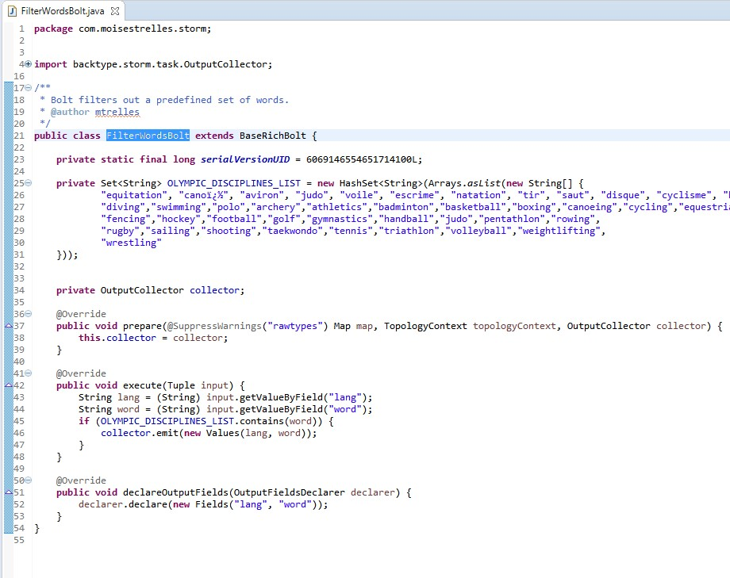WordSplitterBolt.java
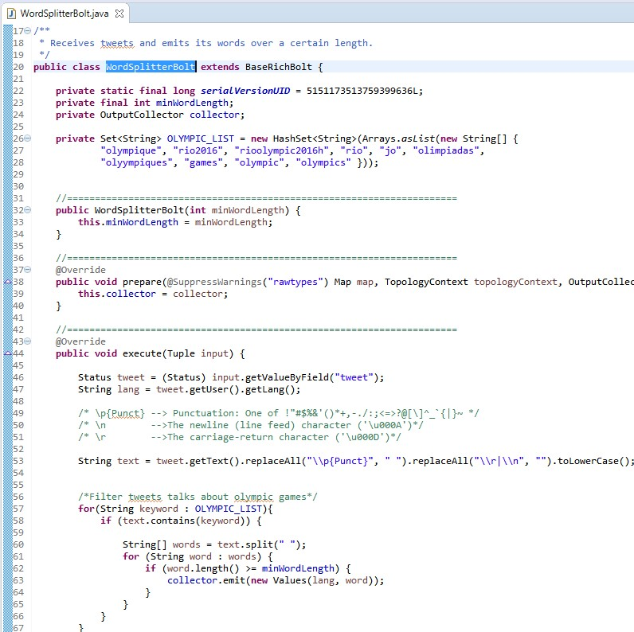WordCounterBolt.java
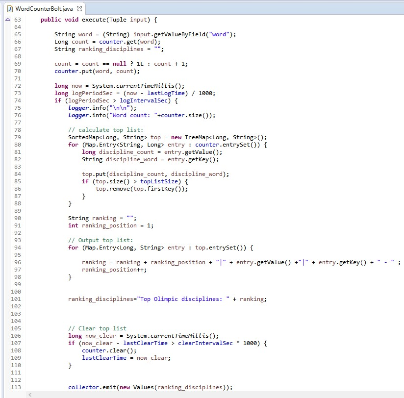Step 3: Launch the topology with storm in the cluster.
I used the command “storm jar storm-twitter-olympics-ranking-0.1-shaded.jar com.moisestrelles.storm.Topology” to launch my topology.
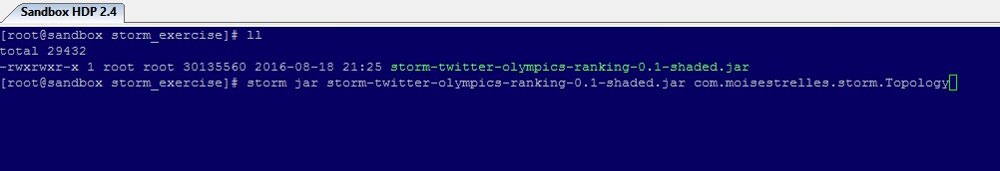 After generating a jar file from your java sources, copy the file in the local file system in the cluster and launch this with the storm command.Tweets are comming:
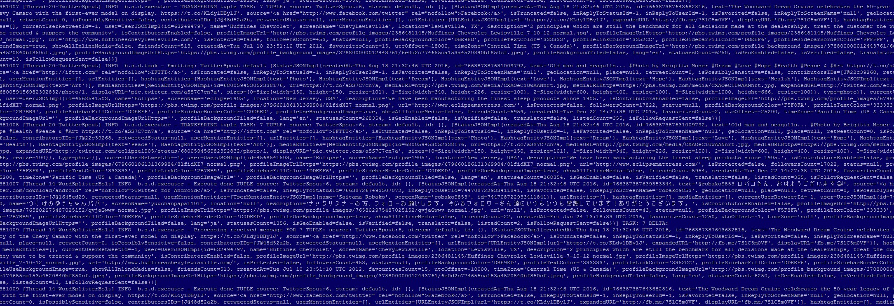Step 4: Output verification
I verified the output result in the HDFS folder:
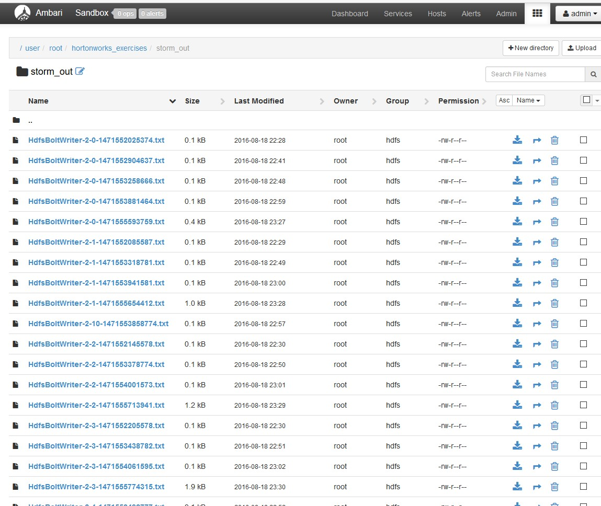Let’s see the output final files, this files contains the liste of disciplines and the number of times this disciplines were mentioned in the twitts:
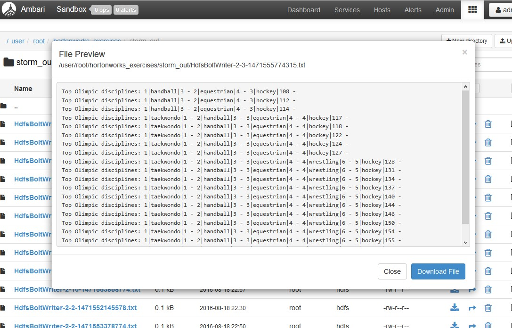